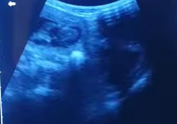

Julie’s Pet Scanning & Microchipping
Mobile Home Visits Across Swansea • Neath • Port Talbot • Aberdare & Beyond
Mobile Home Visits Across Swansea • Neath • Port Talbot • Aberdare & Beyond
✓ Puppy & kitten pregnancy scans from only £40
✓ Dog & cat microchipping from only £30
✓ Same-day & weekend appointments • 7 days a week
★★★★★ Over 140 five-star reviews
Book Now – 07947 516036
Accurate ultrasound from 28 days – see exact number of puppies/kittens, heartbeats & development. Photos included.
From £40
More about Scanning →
Quick home visit, fully registered on Petlog database. Perfect for litters – mum stays relaxed.
Only £30 per pet • Litters £140
More about Microchipping →No travel charge anywhere in the areas below:
Call or text Julie now – most appointments available same or next day!
07947 516036